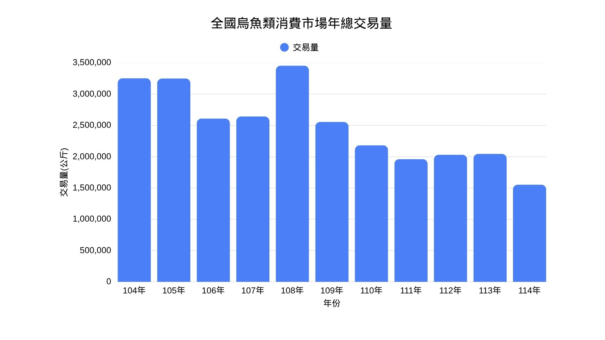
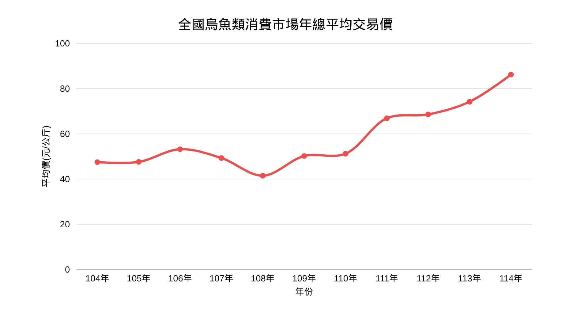
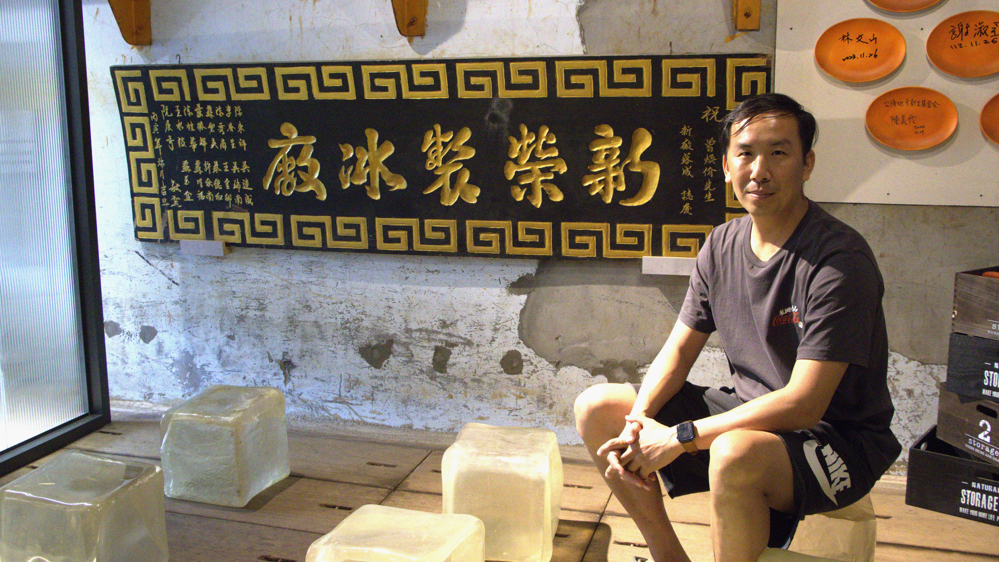

走入雲林鄉間，從田野、魚塭再到販賣魚貨的熱鬧街區，雲林縣是台灣的養殖漁業重鎮，集結了養殖與加工產業，其中口湖鄉更是擁有豐富的產業底蘊。歷經多次的產業變化，如今口湖鄉被許多媒體譽為「烏魚子故鄉」，讓烏魚產業成為當地的特色之一。
然而，近年烏魚產業面臨產量下降、進口烏魚原料低價競爭等挑戰，傳統經營模式逐漸受到衝擊。在這樣的背景下，口湖當地的一位青年發展出屬於自己的特色，將烏魚子結合冰淇淋，打造出超越傳統的品牌形象。

從氣候到低價競爭 烏魚產業的雙重壓力
烏魚的產季貫徹整個寒冬，時間落在每年的11月至隔年的2月，在這期間的所有變化，皆會影響烏魚的收成與品質。極端氣候的出現、氣溫的急劇上升，使烏魚子出現油質劣化或烏魚卵巢不結子的現象，養殖成本與風險也隨之提高。
而現今全球化的年代，取得各個國家的商品變得容易，台灣本土烏魚自然也面臨了全球市場的壓力。近年，中國烏魚卵原料更是以低價衝擊國內市場，經加工後的價格與國內加工烏魚子相差數倍，這樣的市場競爭加上氣候變遷帶來的養殖風險，使國內烏魚養殖放養量呈下降的趨勢。
除了氣候與市場價格因素，野生魚苗來源減少也成為影響烏魚養殖的另一項因素。責任漁業指標RFI創辦人徐承堉表示，過去大量的烏魚捕撈使野生魚苗數量減少，漁民缺乏足夠的魚苗來源，也不得不降低放養量。


漁產品批發市場交易行情站的資料顯示，國內烏魚的消費市場交易量（圖1）正逐年下降，交易價格（圖2）也在十年間創下新高。
然而，交易價格上漲並不代表受惠。利用中國進口烏魚原料加工的烏魚子，價格仍遠低於本土捕撈及養殖的烏魚製品。而中國烏魚卵價格之所以會如此低廉，除了與人力成本便宜有關，還有關稅因素。徐承堉提到，進口商為了不被課徵過多的關稅，就會選擇低報單價以減輕關稅負擔，據徐承堉提供的數據來看，114年中國進口烏魚卵來台的價格平均就低報了50％，數字相當可觀。
如此一來，國產烏魚價格即使逐年攀升，仍難以擺脫低價進口原料的競爭。對台灣養殖與加工業者而言，如何在進口原料價格優勢下維持國產烏魚的市場價值，也成為產業轉型過程中必須面對的課題。
產地標示難辨原料 烏魚子來源引發疑慮
除了原料成本的差異，進口烏魚卵在台灣加工後的產地標示，也引發大眾對原料來源的疑慮。中國進口烏魚卵在台灣經加工後，仍可被標示為「台灣製」，使消費者難以判斷烏魚子的原料來源。在這樣的法律制度下，廠商便可選擇更符合利潤的原料。對此，徐承堉呼籲「廠商要有責任提供這些資訊」，希望政府從制度層面強化原料來源資訊。
然而，對業者而言，面對價格競爭及產品來源的疑慮，除了要求制度更加完善外，也有人選擇嘗試從產品著手，透過加工創新與品牌經營，讓烏魚子不再只是以傳統形式進入市場。來自口湖的曾家祐便是其中例子。
產業困境尋突破 曾家祐打造烏魚子冰淇淋
面對傳統烏魚產業的市場變化，曾家祐選擇從熟悉的烏魚子出發，嘗試以不同的加工方式開拓新的消費市場。其中，最具代表性的便是烏魚子冰淇淋。
烏魚子冰淇淋的靈感是源於一場旅行。曾家祐回憶起一次北海道之旅，當時他吃到了當地著名的金箔冰淇淋便突發奇想，想著或許烏魚子也可以搭配冰淇淋產生不一樣的風味，於是回國後他打造出第一個烏魚子冰淇淋，並對這樣的搭配感嘆道「顛覆我的三觀」。
曾家祐一家三代皆從事漁業，並開設製冰廠供漁業人士使用已有40餘年，近年冰廠遷址，他選擇保留舊有空間，將其改造為具工業風特色的冰店，並販賣起烏魚子冰淇淋及相關產品。而面對創新，曾家祐的家人都表示支持與理解。
這份勇於嘗試的精神，是受到父親曾煥佾的影響。提到曾煥佾，曾家祐形容「我的父親走在我們前面」。在他的印象裡，父親總是非常積極，參加過無數的國際食品展覽，並研發新技術提升競爭力。而一路走來，曾煥佾也經常被同行嘲笑，但對於父親超前的想法，曾家祐屢屢表現出欽佩。他認為現在家裡的事業能如此蒸蒸日上，是緣於父親的堅持與不懈努力。

如今，他也步上父親的步伐進行多方嘗試，除了冰淇淋，還有因應節慶的烏魚子粽及烏魚子鳳梨酥，近期更是結合肉乾，讓烏魚子有更新的呈現方式。
這些年，曾家祐靈活運用網路宣傳，結合文字並拍攝多部短影片，不只延續了三代的家業，也試圖讓傳統烏魚產業走出既有框架，使更多人看見口湖，並重新認識烏魚產業。
而面對現今產業所面臨的衝擊，他認為，產品品質仍是需要持續提升的核心。與其追求價格競爭，不如讓消費者依照自己的口感與價格需求，選擇適合自己的產品。